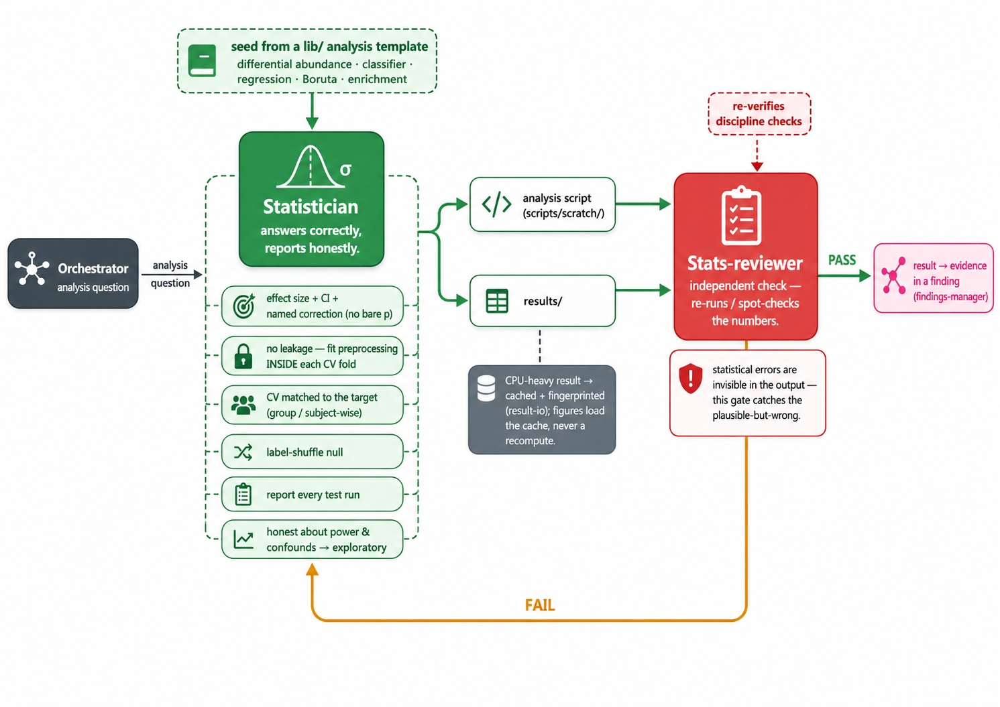

Sound statistics
The statistician
Answers correctly and reports honestly — effect + CI + named correction, no leakage, a label-shuffle null — with an independent reviewer re-running the numbers.

Answers correctly and reports honestly — effect + CI + named correction, no leakage, a label-shuffle null — with an independent reviewer re-running the numbers.
